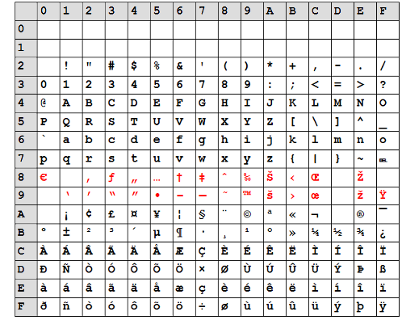

AlbumEasy is able to processes text files encoded with either the Unicode or Latin 1 character sets. The actual character set in use is specified in the configuration dialogue box.
Unicode containing over 110,000 characters is able to encode almost every writing system in use worldwide. AlbumEasy supports UTF-8, one of the more popular Unicode encoding standards.
The Latin 1 character set, also known as ISO-8859-1 consists of 191 "Latin Script"
characters. It is the default character set for Western Europe, the Americas, Oceania, and most of Africa.
Unfortunately ISO-8859-1 omits a few characters that may be of use to philatelists, the most notable of which is the Euro symbol.
So instead AlbumEasy uses Windows CP1252 which is a superset of ISO-8859-1.
It should therefore be noted that the use of Latin 1 in relation to AlbumEasy is
not strictly correct as it actually refers to the Windows CP1252 encoding instead
of ISO-8859-1.
The table below illustrates the characters provided by ISO-88591-1 and Windows CP1252.
Characters common to both are shown in black, the additional Windows CP1252 characters are shown in red.
